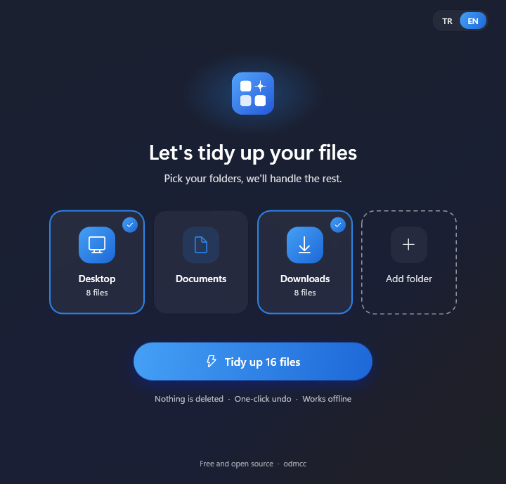
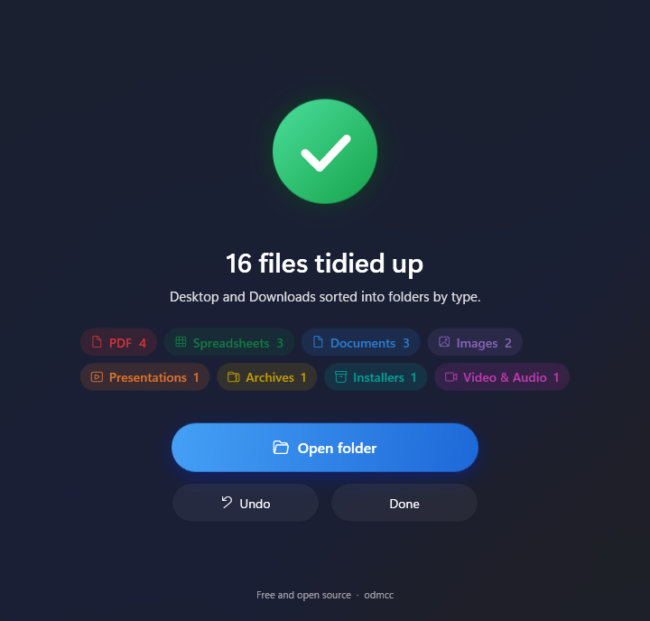

TidyDesk; Masaüstü, Belgeler ve İndirilenler'deki dosyaları türüne göre klasörlere ayırır. Hiçbir şeyi silmez, hiçbir yere göndermez, yaptığı her işlemi geri alabilirsin.
Ücretsiz ve açık kaynak. Windows 10 ve 11, 64-bit.
Dosyalar yalnızca taşınır. Aynı adda bir dosya varsa yenisi rapor (2).pdf adını alır, üstüne yazılmaz.
Her taşıma, olduğu anda günlüğe yazılır. Uygulamayı yarıda kapatsan bile Geri al çalışır.
Kodda ağ bağlantısı yok: ölçüm, güncelleme ya da yükleme yok. Dosya türünü anlamak için yalnızca ilk birkaç baytı okur.
Masaüstü, Belgeler ve İndirilenler hazır gelir. İstediğin başka bir klasörü de ekleyebilirsin. Her kartta kaç dosyanın düzenleneceği yazar.
Dosyalar PDF, Belgeler, Tablolar, Görseller gibi klasörlere ayrılır. Uzantısı olmayan dosyalar içeriğinden tanınır.
Tek tıkla her dosya eski yerine döner.


Uzantısı olmayan bir dosya bile ilk birkaç baytından tanınır. Taranmış bir PDF, PDF klasörüne; adı kaybolmuş bir Word dosyası, Belgeler'e gider. Okuma yalnızca bu bilgisayarda olur.
Uzantısına bakarak şu klasörlere ayırır:
Hiçbirine uymayan dosyalar yerinde kalır; dağınıklığı büyütmez.
desktop.ini..crdownload, .part).Bir klasörü eklerken ve dosyaları taşımadan hemen önce TidyDesk klasörü denetler. Windows'un ve programların klasörleri, sürücü kökleri ve ağ klasörleri baştan reddedilir. Sistem sürücüsünde yalnızca kendi kullanıcı klasörünün içi kabul edilir.
İkisi de aynı program. Hangisinin sana uyduğunu sen seç.
TidyDesk.exe: çift tıkla çalışır. USB bellekten de açılır, bilgisayarda iz bırakmaz. Silmek için dosyayı silmen yeter.
TidyDesk-Setup.exe: Başlat menüsüne eklenir, "Yüklü uygulamalar"dan kaldırılır. Yönetici izni istemez.
Program henüz kod imzalı değil. Windows ilk açılışta "bilgisayarınızı korudu" uyarısı gösterebilir: Ek bilgi'ye, sonra Yine de çalıştır'a bas. Kaynak kodu açık; istersen kendin derleyebilirsin.